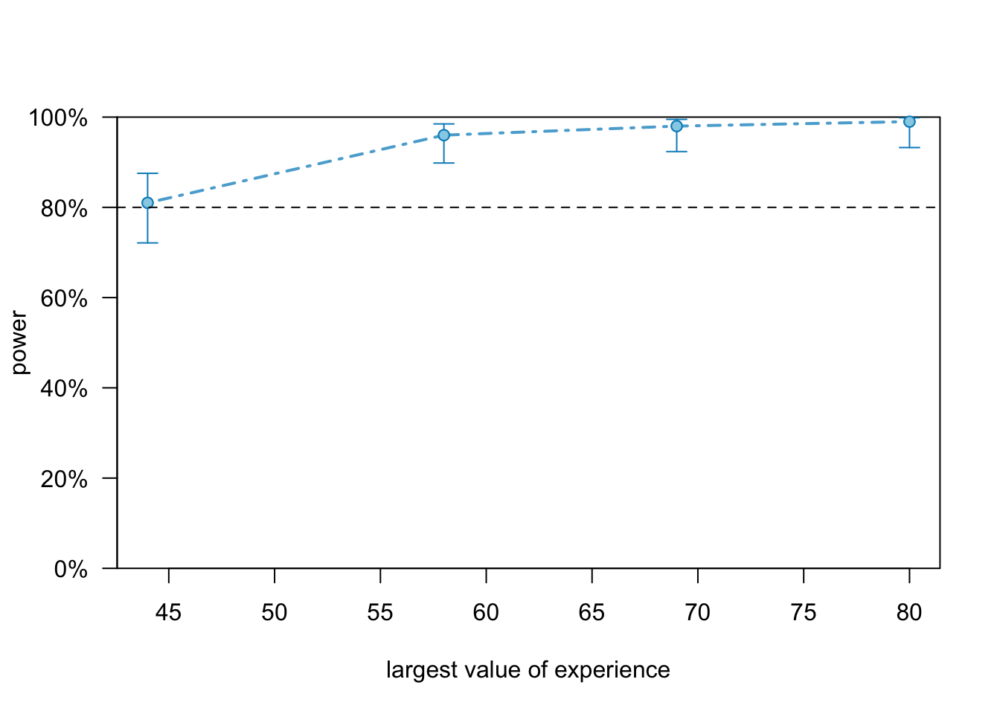

# Seed for random number generation
set.seed(42)Do emergency physicians perform as gastroenterology consultants when given AI clinical decision support through ChatGPT?
Metadata
Title:
Do emergency physicians perform as gastroenterology consultants when given AI clinical decision support through ChatGPT?
Description:
Patients who present with complex conditions to the emergency department (ED) may require consultation from medical or surgical specialists to make accurate diagnoses and to propose appropriate management. Rural and smaller hospitals may not necessarily have access to specialists at all times or even at all, which may increase the risks of missed diagnoses and or delay the initiation of appropriate therapy. Even in larger EDs, specialists may not be immediately available to assist in case management, especially outside of regular hours or on weekends.
Emergency physicians faced with these constraints may benefit from the use of clinical decision support systems (CDSSs) which incorporate patient-specific data to provide recommendations to the clinician in real-time3. As examples, computerized clinical knowledge systems like UpToDate (Wolters-Kluwer, Alphen aan den Rijn, NL) were developed to provide clinicians quick access to medical information at the point-of-care2. More recently, the emergence of artificial intelligence (AI) enabled clinical decision support systems (AI-CDSS) have been developed for a variety of applications. AI-CDSS has the advantage of traditional CDSS of being able to leverage the power of AI or machine learning (ML) in its decision- making, rather than being simply algorithmically programmed to follow expert medical knowledge. However, there is limited research on the ability of AI-CDSS tools to improve physician diagnostic performance and patient outcomes in a real- world setting.
Open AI’s ChatGPT is a Natural Language Processing (NLP) Large Language Model (LLM) developed by OpenAI, designed to generate human-like responses to text inputs. It is the most rapidly adopted web application in history, recording a utilization rate exceeding one million unique users in just seven days. It is built on the Transformer architecture, a Ddeep Nneural Nnetwork (DNN) architecture for processing sequential data, such as natural language text. It was trained on massive amounts of text data encompassing a broad spectrum of data sources, including literary works, periodicals, and conversational transcripts. As a result of this extensive training, the ChatGPT system is capable of comprehending a wide array of subjects and situational contexts. It uses a combination of DNNsdeep neural networks and attention mechanisms to generate responses that are contextually appropriate and coherent. As such, it can be immediately and seamlessly integrated into clinical workflows in diverse clinical settings.
Recently, ChatGPT was investigated as a clinical decision support tool to provide differential diagnoses on de-identified clinical cases, and performed well at providing differential diagnoses with high accuracy. As such, ChatGPT may have the ability to serve as a reasonable substitute for a specialist consultation in settings where access to specialists is limited.
Patients with gastroenterologic disease may require time-sensitive diagnosis and institution of treatment. For example, patients with gastrointestinal bleeding (GIB) require an accurate and prompt assessment to determine the need, timing, and modality of endoscopy, as well as medical management to reduce the risk of complications. Failure to institute a proper management plan in a timely fashion may increase the risk of morbidity and mortality. There is potentially a role for AI-powered LLMs like ChatGPT to assist clinicians in making these time-sensitive diagnoses and institute appropriate management, though this has not been previously assessed.
The purpose of this study was to determine whether providing emergency physicians (- non-task expert clinicians in gastroenterology) - with access to a ChatGPT- generated diagnosis and management plan - improves the diagnostic accuracy and management plan compared with those made by non-expert clinicians in the absence of ChatGPT support. Additionally, we planned to investigate whether clinical advice from ChatGPT improves the performance of non-task expert physicians to a level comparable to that of task expert physicians.
Study information
Hypotheses:
Hypothesis 1: Gastroenterology consultants will demonstrate higher accuracy in a) diagnosis, b) differential diagnosis, and c) treatment management plan when compared with emergency physicians before receiving ChatGPT diagnostic advice.
Hypothesis 2: There will be a positive interaction between the expert status of the participants and receiving ChatGPT diagnostic advice, in that the increase in accuracy of a) diagnosis, b) differential diagnosis, and c) treatment management plan will be higher among emergency physicians compared to gastroenterology consultants after receiving ChatGPT diagnostic advice vs. before receiving ChatGPT diagnostic advice.
Hypothesis 3: There will be a positive interaction between the expert status of the participants and the quality of the ChatGPT diagnostic advice, in that with increasing quality of ChatGPT diagnostic advice, the increase in accuracy of a) diagnosis, b) differential diagnosis, and c) treatment management plan will be higher among emergency physicians compared to gastroenterology consultants.
Design plan
Study type:
- Experiment
Blinding:
- No blinding is involved in this study.
Is there any additional blinding in this study?
Experts in the field will compare the a) diagnosis, b) differential diagnosis, and c) treatment management plan to gold standards while remaining blind to the participants’ professional group and whether or not the answers were given before or after ChatGPT diagnostic advice was received.
Study design:
Between and within subjects design.
Randomization:
No randomization is required because all participants will receive ChatGPT advice.
Sampling plan
Existing data:
Registration prior to creation of data.
Explanation of existing data:
NA
Data collection procedures:
[PLEASE ADD!]
Sample size:
The results of the simulation study suggest that at least 50 emergency physicians and 50 gastroenterology consultants should be included to reach a power of > 80%.
Sample size rationale:
Please see power analysis.
Stopping rule:
Data will be collected until a sufficient sample size is reached (please see attached simulation study).
Variables
Manipulated variables:
Presentation of ChatGPT diagnostic advice at T2.
Measured variables:
Dependent variables:
- accuracy of most likeluy diagnosis
- accuracy of differential diagnosis
- accuracy of treatment management plan
Independent variables:
- professional group
- time
Within-subjects variable
- case
Covariates (between-subjects):
- professional autonomy beliefs
- years of professional experience (from start of residency)
- AI attitudes
- AI knowledge
Analysis plan
Statistical models:
Please see attached simulation study for details.
Transformations:
Scaling of continuous variables.
Inference criteria:
Confidence intervals and p-values.
Missing data:
We use complete observations.
Other
Other
NA
Simulation
library(tidyverse)Simulate aggregated data
library(lavaan)
library(LMest)
library(wakefield)
library(tidyverse)
model <- 'diag_like_em_pr =~ diag_like_em_pre
diag_like_em_pre ~~ 1.5*diag_like_em_pre
diag_like_em_pre ~ 3.5*1
diag_like_ge_pr =~ diag_like_ge_pre
diag_like_ge_pre ~~ 1.5*diag_like_ge_pre
diag_like_em_po =~ diag_like_em_post
diag_like_em_post ~~ 1.5*diag_like_em_post
diag_like_ge_po =~ diag_like_ge_post
diag_like_ge_post ~~ 1.5*diag_like_ge_post
diag_diff_em_pr =~ diag_diff_em_pre
diag_diff_em_pre ~~ 1.5*diag_diff_em_pre
diag_diff_ge_pr =~ diag_diff_ge_pre
diag_diff_ge_pre ~~ 1.5*diag_diff_ge_pre
diag_diff_em_po =~ diag_diff_em_post
diag_diff_em_post ~~ 1.5*diag_diff_em_post
diag_diff_ge_po =~ diag_diff_ge_post
diag_diff_ge_post ~~ 1.5*diag_diff_ge_post
manage_em_pr =~ manage_em_pre
manage_em_pre ~~ 1.5*manage_em_pre
manage_ge_pr =~ manage_ge_pre
manage_ge_pre ~~ 1.5*manage_ge_pre
manage_em_po =~ manage_em_post
manage_em_post ~~ 1.5*manage_em_post
manage_ge_po =~ manage_ge_post
manage_ge_post ~~ 1.5*manage_ge_post
conf_em_pr =~ conf_em_pre
conf_em_pre ~~ 1.5*conf_em_pre
conf_ge_pr =~ conf_ge_pre
conf_ge_pre ~~ 1.5*conf_ge_pre
conf_em_po =~ conf_em_post
conf_em_post ~~ 1.5*conf_em_post
conf_ge_po =~ conf_ge_post
conf_ge_post ~~ 1.5*conf_ge_post
eff_em_pr =~ eff_em_pre
eff_em_pre ~~ 1.5*eff_em_pre
eff_ge_pr =~ eff_ge_pre
eff_ge_pre ~~ 1.5*eff_ge_pre
eff_em_po =~ eff_em_post
eff_em_post ~~ 1.5*eff_em_post
eff_ge_po =~ eff_ge_post
eff_ge_post ~~ 1.5*eff_ge_post
'
data <- simulateData(model = model, model.type = "cfa", sample.nobs = 1000L, # 10 times (ten cases) 100 participants
return.type = "data.frame")
data <- data[rep(seq_len(nrow(data)), each = 2), ]
data$id <- rep(1:100, 20)
data$case <- rep(rep(1:10, each = 100), 2)
data$quality <- rep(rep(rnorm(10, 8, 2.5), each = 100), 2)
ages <- age(100, x = 18:89, prob = NULL, name = "Age")
data$age <- rep(rep(ages, 10), 2)
experience <- age(100, x = 1:50, prob = NULL, name = "Experience")
data$experience <- rep(rep(ages, 10), 2)
genders <- sample(1:3, replace = T, size = 100, prob = c(0.45, 0.45, 0.1))
data$gender <- rep(rep(genders, 10),2)
adj_like <- rep(rep(rnorm(100, 3, 1.5), 10), 2)
data$adj_like <- adj_like
adj_diff <- rep(rep(rnorm(100, 3, 1.5), 10), 2)
data$adj_diff <- adj_diff
adj_manage <- rep(rep(rnorm(100, 3, 1.5), 10), 2)
data$adj_manage <- adj_manage
recomm <- rep(rep(rnorm(100, 3, 1.5), 10), 2)
data$recomm <- recomm
autonomy <- rep(rep(rnorm(100, 3, 1.5), 10), 2)
data$autonomy <- autonomy
know_exp <- rep(rep(rnorm(100, 3, 1.5), 10), 2)
data$know_exp <- know_exp
attitude <- rep(rep(rnorm(100, 3, 1.5), 10), 2)
data$attitude <- attitude time <- rep(1:2, each = 1000)
group <- rep(rep(c("gastro", "emergency"), each = 50), 20)
data$time = time
data$group = factor(group, levels = c("gastro", "emergency"))library(summarytools)
dfSummary(data)Data Frame Summary
data
Dimensions: 2000 x 33
Duplicates: 0
--------------------------------------------------------------------------------------------------------------------
No Variable Stats / Values Freqs (% of Valid) Graph Valid Missing
---- ------------------- ------------------------- ---------------------- --------------------- ---------- ---------
1 diag_like_em_pre Mean (sd) : 3.6 (1.5) 1000 distinct values : : 2000 0
[numeric] min < med < max: : : : (100.0%) (0.0%)
-1.3 < 3.6 < 8.1 : : : : .
IQR (CV) : 2.1 (0.4) . : : : : :
. : : : : : : .
2 diag_like_ge_pre Mean (sd) : 0 (1.6) 1000 distinct values . : . 2000 0
[numeric] min < med < max: : : : . (100.0%) (0.0%)
-4.7 < 0 < 5.1 : : : :
IQR (CV) : 2.3 (391.2) : : : : : .
: : : : : : : .
3 diag_like_em_post Mean (sd) : 0 (1.6) 1000 distinct values : 2000 0
[numeric] min < med < max: . : (100.0%) (0.0%)
-5.3 < 0 < 5 . : : .
IQR (CV) : 2.1 (-38.1) . : : : : .
: : : : : : .
4 diag_like_ge_post Mean (sd) : 0 (1.6) 1000 distinct values . : 2000 0
[numeric] min < med < max: : : . (100.0%) (0.0%)
-5.1 < 0 < 4.7 : : : :
IQR (CV) : 2.2 (-33.9) : : : : : :
. : : : : : : .
5 diag_diff_em_pre Mean (sd) : 0.1 (1.7) 1000 distinct values : : 2000 0
[numeric] min < med < max: : : (100.0%) (0.0%)
-5.3 < 0.1 < 5.2 . : : :
IQR (CV) : 2.1 (18.7) : : : : .
. : : : : : : .
6 diag_diff_ge_pre Mean (sd) : 0 (1.6) 1000 distinct values . : 2000 0
[numeric] min < med < max: : : . (100.0%) (0.0%)
-5.4 < 0 < 4.8 . : : :
IQR (CV) : 2.1 (-44) : : : : .
. : : : : : : .
7 diag_diff_em_post Mean (sd) : 0 (1.6) 1000 distinct values : . 2000 0
[numeric] min < med < max: . : : (100.0%) (0.0%)
-4.8 < 0 < 5.6 : : :
IQR (CV) : 2 (-128.5) : : : : :
: : : : : : :
8 diag_diff_ge_post Mean (sd) : 0 (1.6) 1000 distinct values : 2000 0
[numeric] min < med < max: . : : (100.0%) (0.0%)
-5.1 < 0 < 5.8 : : : .
IQR (CV) : 2.1 (52.4) . : : : :
. : : : : : : .
9 manage_em_pre Mean (sd) : 0 (1.6) 1000 distinct values : 2000 0
[numeric] min < med < max: : : : (100.0%) (0.0%)
-4.3 < -0.1 < 4.7 : : : :
IQR (CV) : 2.2 (-48.5) : : : : : .
. : : : : : : : .
10 manage_ge_pre Mean (sd) : 0 (1.6) 1000 distinct values . : 2000 0
[numeric] min < med < max: : : : (100.0%) (0.0%)
-5.5 < 0 < 4.7 . : : :
IQR (CV) : 2.1 (-80.3) : : : : :
: : : : : : :
11 manage_em_post Mean (sd) : -0.1 (1.6) 1000 distinct values : . 2000 0
[numeric] min < med < max: : : (100.0%) (0.0%)
-4.9 < -0.1 < 5.3 : : : .
IQR (CV) : 2.1 (-30.4) : : : : :
. : : : : : : .
12 manage_ge_post Mean (sd) : 0.1 (1.6) 1000 distinct values . : 2000 0
[numeric] min < med < max: : : . (100.0%) (0.0%)
-4.5 < 0.1 < 6.8 : : : :
IQR (CV) : 2.2 (27) . : : : :
. : : : : : :
13 conf_em_pre Mean (sd) : -0.1 (1.6) 1000 distinct values : . 2000 0
[numeric] min < med < max: . : : (100.0%) (0.0%)
-4.9 < -0.1 < 4.9 : : : :
IQR (CV) : 2.2 (-16.4) . : : : :
. : : : : : : .
14 conf_ge_pre Mean (sd) : 0 (1.5) 1000 distinct values : 2000 0
[numeric] min < med < max: : : . (100.0%) (0.0%)
-6.4 < 0 < 5.3 : : :
IQR (CV) : 2.1 (-134.7) . : : : .
. : : : : : .
15 conf_em_post Mean (sd) : 0 (1.6) 1000 distinct values : 2000 0
[numeric] min < med < max: : : (100.0%) (0.0%)
-4.7 < 0.1 < 5.2 : : : :
IQR (CV) : 2.3 (45.1) : : : : :
: : : : : : : .
16 conf_ge_post Mean (sd) : 0 (1.6) 1000 distinct values : 2000 0
[numeric] min < med < max: : : : (100.0%) (0.0%)
-5.3 < 0 < 4.7 : : : :
IQR (CV) : 2.2 (-64.3) . : : : : :
. : : : : : : .
17 eff_em_pre Mean (sd) : 0 (1.6) 1000 distinct values : . 2000 0
[numeric] min < med < max: . : : (100.0%) (0.0%)
-5 < -0.1 < 5 : : : :
IQR (CV) : 2.1 (-45.4) . : : : : .
. : : : : : : .
18 eff_ge_pre Mean (sd) : 0 (1.6) 1000 distinct values : : 2000 0
[numeric] min < med < max: . : : (100.0%) (0.0%)
-5.1 < 0 < 5.5 : : : .
IQR (CV) : 2 (-321) . : : : :
. : : : : : : .
19 eff_em_post Mean (sd) : 0 (1.6) 1000 distinct values : 2000 0
[numeric] min < med < max: : : : (100.0%) (0.0%)
-4.6 < 0 < 5.7 : : :
IQR (CV) : 2.1 (-185.4) : : : : :
. . : : : : : .
20 eff_ge_post Mean (sd) : 0 (1.6) 1000 distinct values : . 2000 0
[numeric] min < med < max: : : (100.0%) (0.0%)
-5.3 < 0 < 5.5 : : : :
IQR (CV) : 2.1 (-38.8) . : : : :
. : : : : : :
21 id Mean (sd) : 50.5 (28.9) 100 distinct values : : : : : : : : : : 2000 0
[integer] min < med < max: : : : : : : : : : : (100.0%) (0.0%)
1 < 50.5 < 100 : : : : : : : : : :
IQR (CV) : 49.5 (0.6) : : : : : : : : : :
: : : : : : : : : :
22 case Mean (sd) : 5.5 (2.9) 1 : 200 (10.0%) II 2000 0
[integer] min < med < max: 2 : 200 (10.0%) II (100.0%) (0.0%)
1 < 5.5 < 10 3 : 200 (10.0%) II
IQR (CV) : 5 (0.5) 4 : 200 (10.0%) II
5 : 200 (10.0%) II
6 : 200 (10.0%) II
7 : 200 (10.0%) II
8 : 200 (10.0%) II
9 : 200 (10.0%) II
10 : 200 (10.0%) II
23 age_1 Mean (sd) : 54.5 (20.8) 58 distinct values : : 2000 0
[integer] min < med < max: . : . . . : (100.0%) (0.0%)
18 < 54 < 88 . : : : : : : . :
IQR (CV) : 37.5 (0.4) : : : . : : : : : :
: : : : : : : : : :
24 gender Mean (sd) : 1.6 (0.6) 1 : 900 (45.0%) IIIIIIIII 2000 0
[integer] min < med < max: 2 : 920 (46.0%) IIIIIIIII (100.0%) (0.0%)
1 < 2 < 3 3 : 180 ( 9.0%) I
IQR (CV) : 1 (0.4)
25 adj_like Mean (sd) : 2.9 (1.6) 100 distinct values : . 2000 0
[numeric] min < med < max: . : : (100.0%) (0.0%)
-2 < 2.9 < 6.9 : . : : :
IQR (CV) : 2.1 (0.5) : : : : :
: : : : : : : .
26 adj_diff Mean (sd) : 2.6 (1.5) 100 distinct values : 2000 0
[numeric] min < med < max: . : . (100.0%) (0.0%)
-2.5 < 2.6 < 5.6 : : : :
IQR (CV) : 1.9 (0.6) : : : : :
. . : : : : : :
27 adj_manage Mean (sd) : 2.8 (1.3) 100 distinct values : 2000 0
[numeric] min < med < max: : (100.0%) (0.0%)
-0.6 < 2.8 < 6.8 : . : : .
IQR (CV) : 1.8 (0.5) : : : : : :
. . : : : : : :
28 recomm Mean (sd) : 2.7 (1.6) 100 distinct values : 2000 0
[numeric] min < med < max: : : : . (100.0%) (0.0%)
-1.2 < 2.8 < 6.1 : : : : :
IQR (CV) : 2.3 (0.6) : : : : : : :
: : : : : : : : : :
29 autonomy Mean (sd) : 3 (1.4) 100 distinct values . . : 2000 0
[numeric] min < med < max: : : : : . (100.0%) (0.0%)
0 < 3 < 7 : : : : :
IQR (CV) : 1.9 (0.5) : : : : : : .
: : : : : : : : . .
30 know_exp Mean (sd) : 2.9 (1.6) 100 distinct values : : 2000 0
[numeric] min < med < max: : : . (100.0%) (0.0%)
-1.1 < 2.8 < 7.1 . : : : :
IQR (CV) : 2 (0.5) . : : : : :
. : : : : : : : . .
31 attitude Mean (sd) : 2.7 (1.4) 100 distinct values . : 2000 0
[numeric] min < med < max: : : . (100.0%) (0.0%)
-0.8 < 2.8 < 5.9 : : : .
IQR (CV) : 1.8 (0.5) : : : : : : :
. : : : : : : : : .
32 time Min : 1 1 : 1000 (50.0%) IIIIIIIIII 2000 0
[integer] Mean : 1.5 2 : 1000 (50.0%) IIIIIIIIII (100.0%) (0.0%)
Max : 2
33 group 1. emergency 1000 (50.0%) IIIIIIIIII 2000 0
[character] 2. gastro 1000 (50.0%) IIIIIIIIII (100.0%) (0.0%)
--------------------------------------------------------------------------------------------------------------------data_red <- data %>% filter(time ==2 )Create fixed and random effects
# Scientific Reports paper: https://www.nature.com/articles/s41598-023-28633-w
# chatgpt recommendation quality on within level (ChatGPT * group)
fixed <- c(2.5, # intercept of the change score
-0.04, # experience effect (Professional experience (years))
-0.07, # autonomy effect (Beliefs about professional autonomy)
0.10, # AI expert effect (Self-reported AI-knowledge)
0.04, # AI attitude effect (Attitude toward AI)
0.10, # time effect
0.24, # group effect (slope for emergency) (Task expertise (experts: radiologists))
0.25, # Quality effect (explainability)
0.05, # time * group effect
0.03 # group * quality effect
)
rand <- list(0.06, 0.04, 0.19)
#list(0.06, 0.52, 0.43, 0.05299057, 0.03212476, 0.09457272) # Random intercepts and slopes
res <- 0.79 # residual standard deviationCreate the model
library(simr)
library(future)
model <- lmer(diag_like_em_post ~ experience + autonomy + know_exp + attitude + time*group + quality*group + (1 + quality|id), data=data)
modelLinear mixed model fit by REML ['lmerMod']
Formula: diag_like_em_post ~ experience + autonomy + know_exp + attitude +
time * group + quality * group + (1 + quality | id)
Data: data
REML criterion at convergence: 7549.331
Random effects:
Groups Name Std.Dev. Corr
id (Intercept) 0.8294
quality 0.1120 -1.00
Residual 1.5661
Number of obs: 2000, groups: id, 100
Fixed Effects:
(Intercept) experience autonomy
0.824983 0.002178 -0.037949
know_exp attitude time
-0.028601 -0.060124 -0.224093
groupemergency quality time:groupemergency
-0.471673 -0.025303 0.195343
groupemergency:quality
0.008941
optimizer (nloptwrap) convergence code: 0 (OK) ; 0 optimizer warnings; 1 lme4 warnings # diag_like_em_post = all scores
model <- makeLmer(diag_like_em_post ~ experience + autonomy + know_exp + attitude + time*group + quality*group + (1 + quality|id), fixef=fixed, VarCorr=as.matrix(rand), sigma=res, data=data)
modelLinear mixed model fit by REML ['lmerMod']
Formula: diag_like_em_post ~ experience + autonomy + know_exp + attitude +
time * group + quality * group + (1 + quality | id)
Data: data
REML criterion at convergence: 8055.715
Random effects:
Groups Name Std.Dev. Corr
id (Intercept) 0.2226
quality 0.4796 0.00
Residual 0.7900
Number of obs: 2000, groups: id, 100
Fixed Effects:
(Intercept) experience autonomy
2.50 -0.04 -0.07
know_exp attitude time
0.10 0.04 0.10
groupemergency quality time:groupemergency
0.24 0.25 0.05
groupemergency:quality
0.03 Power analysis
sim <- powerSim(model, nsim=100, test = fcompare(diag_like_em_post ~ experience + autonomy + know_exp + attitude + time + group + quality + (1 + quality|id)))Simulating: | |Simulating: |= |Simulating: |== |Simulating: |=== |Simulating: |==== |Simulating: |===== |Simulating: |====== |Simulating: |======= |Simulating: |======== |Simulating: |========= |Simulating: |========== |Simulating: |=========== |Simulating: |============ |Simulating: |============= |Simulating: |============== |Simulating: |=============== |Simulating: |================ |Simulating: |================= |Simulating: |================== |Simulating: |=================== |Simulating: |==================== |Simulating: |===================== |Simulating: |====================== |Simulating: |======================= |Simulating: |======================== |Simulating: |========================= |Simulating: |========================== |Simulating: |=========================== |Simulating: |============================ |Simulating: |============================= |Simulating: |============================== |Simulating: |=============================== |Simulating: |================================ |Simulating: |================================= |Simulating: |================================== |Simulating: |=================================== |Simulating: |==================================== |Simulating: |===================================== |Simulating: |====================================== |Simulating: |======================================= |Simulating: |======================================== |Simulating: |========================================= |Simulating: |========================================== |Simulating: |=========================================== |Simulating: |============================================ |Simulating: |============================================= |Simulating: |============================================== |Simulating: |=============================================== |Simulating: |================================================ |Simulating: |================================================= |Simulating: |================================================== |Simulating: |=================================================== |Simulating: |==================================================== |Simulating: |===================================================== |Simulating: |====================================================== |Simulating: |======================================================= |Simulating: |======================================================== |Simulating: |========================================================= |Simulating: |========================================================== |Simulating: |=========================================================== |Simulating: |============================================================ |Simulating: |============================================================= |Simulating: |============================================================== |Simulating: |=============================================================== |Simulating: |================================================================ |Simulating: |================================================================= |Simulating: |==================================================================|simPower for model comparison, (95% confidence interval):
100.0% (96.38, 100.0)
Test: Likelihood ratio
Comparison to diag_like_em_post ~ experience + autonomy + know_exp + attitude + + [re]
Based on 100 simulations, (100 warnings, 0 errors)
alpha = 0.05, nrow = 2000
Time elapsed: 0 h 0 m 26 s## Add more participants
#| eval: false
model_ext_subj <- extend(model, within="case+group+time", n=100)
model_ext_subjLinear mixed model fit by REML ['lmerMod']
Formula: diag_like_em_post ~ experience + autonomy + know_exp + attitude +
time * group + quality * group + (1 + quality | id)
Data: data
REML criterion at convergence: 8055.715
Random effects:
Groups Name Std.Dev. Corr
id (Intercept) 0.2226
quality 0.4796 0.00
Residual 0.7900
Number of obs: 2000, groups: id, 100
Fixed Effects:
(Intercept) experience autonomy
2.50 -0.04 -0.07
know_exp attitude time
0.10 0.04 0.10
groupemergency quality time:groupemergency
0.24 0.25 0.05
groupemergency:quality
0.03 sim_treat_subj <- powerSim(model_ext_subj, nsim=100, test = fcompare(diag_like_em_post ~ experience + autonomy + know_exp + attitude + time + group + quality + (1 + quality|id)))Simulating: | |Simulating: |= |Simulating: |== |Simulating: |=== |Simulating: |==== |Simulating: |===== |Simulating: |====== |Simulating: |======= |Simulating: |======== |Simulating: |========= |Simulating: |========== |Simulating: |=========== |Simulating: |============ |Simulating: |============= |Simulating: |============== |Simulating: |=============== |Simulating: |================ |Simulating: |================= |Simulating: |================== |Simulating: |=================== |Simulating: |==================== |Simulating: |===================== |Simulating: |====================== |Simulating: |======================= |Simulating: |======================== |Simulating: |========================= |Simulating: |========================== |Simulating: |=========================== |Simulating: |============================ |Simulating: |============================= |Simulating: |============================== |Simulating: |=============================== |Simulating: |================================ |Simulating: |================================= |Simulating: |================================== |Simulating: |=================================== |Simulating: |==================================== |Simulating: |===================================== |Simulating: |====================================== |Simulating: |======================================= |Simulating: |======================================== |Simulating: |========================================= |Simulating: |========================================== |Simulating: |=========================================== |Simulating: |============================================ |Simulating: |============================================= |Simulating: |============================================== |Simulating: |=============================================== |Simulating: |================================================ |Simulating: |================================================= |Simulating: |================================================== |Simulating: |=================================================== |Simulating: |==================================================== |Simulating: |===================================================== |Simulating: |====================================================== |Simulating: |======================================================= |Simulating: |======================================================== |Simulating: |========================================================= |Simulating: |========================================================== |Simulating: |=========================================================== |Simulating: |============================================================ |Simulating: |============================================================= |Simulating: |============================================================== |Simulating: |=============================================================== |Simulating: |================================================================ |Simulating: |================================================================= |Simulating: |==================================================================|sim_treat_subjPower for model comparison, (95% confidence interval):
100.0% (96.38, 100.0)
Test: Likelihood ratio
Comparison to diag_like_em_post ~ experience + autonomy + know_exp + attitude + + [re]
Based on 100 simulations, (100 warnings, 0 errors)
alpha = 0.05, nrow = 4000
Time elapsed: 0 h 0 m 48 sShow how power develops depending on participant number (per group)
p_curve_treat <- powerCurve(model, nsim = 100, test=fcompare(diag_like_em_post ~ experience + autonomy + know_exp + attitude + time + group + quality + (1 + quality|id)), breaks=c(20, 30, 40, 50, 60))Simulating: | |Simulating: |= |Simulating: |== |Simulating: |=== |Simulating: |==== |Simulating: |===== |Simulating: |====== |Simulating: |======= |Simulating: |======== |Simulating: |========= |Simulating: |========== |Simulating: |=========== |Simulating: |============ |Simulating: |============= |Simulating: |============== |Simulating: |=============== |Simulating: |================ |Simulating: |================= |Simulating: |================== |Simulating: |=================== |Simulating: |==================== |Simulating: |===================== |Simulating: |====================== |Simulating: |======================= |Simulating: |======================== |Simulating: |========================= |Simulating: |========================== |Simulating: |=========================== |Simulating: |============================ |Simulating: |============================= |Simulating: |============================== |Simulating: |=============================== |Simulating: |================================ |Simulating: |================================= |Simulating: |================================== |Simulating: |=================================== |Simulating: |==================================== |Simulating: |===================================== |Simulating: |====================================== |Simulating: |======================================= |Simulating: |======================================== |Simulating: |========================================= |Simulating: |========================================== |Simulating: |=========================================== |Simulating: |============================================ |Simulating: |============================================= |Simulating: |============================================== |Simulating: |=============================================== |Simulating: |================================================ |Simulating: |================================================= |Simulating: |================================================== |Simulating: |=================================================== |Simulating: |==================================================== |Simulating: |===================================================== |Simulating: |====================================================== |Simulating: |======================================================= |Simulating: |======================================================== |Simulating: |========================================================= |Simulating: |========================================================== |Simulating: |=========================================================== |Simulating: |============================================================ |Simulating: |============================================================= |Simulating: |============================================================== |Simulating: |=============================================================== |Simulating: |================================================================ |Simulating: |================================================================= |Simulating: |==================================================================|(1/5) (1/5) Simulating: | |(1/5) Simulating: |= |(1/5) Simulating: |== |(1/5) Simulating: |=== |(1/5) Simulating: |==== |(1/5) Simulating: |===== |(1/5) Simulating: |====== |(1/5) Simulating: |======= |(1/5) Simulating: |======== |(1/5) Simulating: |========= |(1/5) Simulating: |========== |(1/5) Simulating: |=========== |(1/5) Simulating: |============ |(1/5) Simulating: |============= |(1/5) Simulating: |============== |(1/5) Simulating: |=============== |(1/5) Simulating: |================ |(1/5) Simulating: |================= |(1/5) Simulating: |================== |(1/5) Simulating: |=================== |(1/5) Simulating: |==================== |(1/5) Simulating: |===================== |(1/5) Simulating: |====================== |(1/5) Simulating: |======================= |(1/5) Simulating: |======================== |(1/5) Simulating: |========================= |(1/5) Simulating: |========================== |(1/5) Simulating: |=========================== |(1/5) Simulating: |============================ |(1/5) Simulating: |============================= |(1/5) Simulating: |============================== |(1/5) Simulating: |=============================== |(1/5) Simulating: |================================ |(1/5) Simulating: |================================= |(1/5) Simulating: |================================== |(1/5) Simulating: |=================================== |(1/5) Simulating: |==================================== |(1/5) Simulating: |===================================== |(1/5) Simulating: |====================================== |(1/5) Simulating: |======================================= |(1/5) Simulating: |======================================== |(1/5) Simulating: |========================================= |(1/5) Simulating: |========================================== |(1/5) Simulating: |=========================================== |(1/5) Simulating: |============================================ |(1/5) Simulating: |============================================= |(1/5) Simulating: |============================================== |(1/5) Simulating: |=============================================== |(1/5) Simulating: |================================================ |(1/5) Simulating: |================================================= |(1/5) Simulating: |================================================== |(1/5) Simulating: |=================================================== |(1/5) Simulating: |==================================================== |(1/5) Simulating: |===================================================== |(1/5) Simulating: |====================================================== |(1/5) Simulating: |======================================================= |(1/5) Simulating: |======================================================== |(1/5) Simulating: |========================================================= |(1/5) Simulating: |========================================================== |(1/5) Simulating: |=========================================================== |(1/5) Simulating: |============================================================|(1/5) (2/5) (2/5) Simulating: | |(2/5) Simulating: |= |(2/5) Simulating: |== |(2/5) Simulating: |=== |(2/5) Simulating: |==== |(2/5) Simulating: |===== |(2/5) Simulating: |====== |(2/5) Simulating: |======= |(2/5) Simulating: |======== |(2/5) Simulating: |========= |(2/5) Simulating: |========== |(2/5) Simulating: |=========== |(2/5) Simulating: |============ |(2/5) Simulating: |============= |(2/5) Simulating: |============== |(2/5) Simulating: |=============== |(2/5) Simulating: |================ |(2/5) Simulating: |================= |(2/5) Simulating: |================== |(2/5) Simulating: |=================== |(2/5) Simulating: |==================== |(2/5) Simulating: |===================== |(2/5) Simulating: |====================== |(2/5) Simulating: |======================= |(2/5) Simulating: |======================== |(2/5) Simulating: |========================= |(2/5) Simulating: |========================== |(2/5) Simulating: |=========================== |(2/5) Simulating: |============================ |(2/5) Simulating: |============================= |(2/5) Simulating: |============================== |(2/5) Simulating: |=============================== |(2/5) Simulating: |================================ |(2/5) Simulating: |================================= |(2/5) Simulating: |================================== |(2/5) Simulating: |=================================== |(2/5) Simulating: |==================================== |(2/5) Simulating: |===================================== |(2/5) Simulating: |====================================== |(2/5) Simulating: |======================================= |(2/5) Simulating: |======================================== |(2/5) Simulating: |========================================= |(2/5) Simulating: |========================================== |(2/5) Simulating: |=========================================== |(2/5) Simulating: |============================================ |(2/5) Simulating: |============================================= |(2/5) Simulating: |============================================== |(2/5) Simulating: |=============================================== |(2/5) Simulating: |================================================ |(2/5) Simulating: |================================================= |(2/5) Simulating: |================================================== |(2/5) Simulating: |=================================================== |(2/5) Simulating: |==================================================== |(2/5) Simulating: |===================================================== |(2/5) Simulating: |====================================================== |(2/5) Simulating: |======================================================= |(2/5) Simulating: |======================================================== |(2/5) Simulating: |========================================================= |(2/5) Simulating: |========================================================== |(2/5) Simulating: |=========================================================== |(2/5) Simulating: |============================================================|(2/5) (3/5) (3/5) Simulating: | |(3/5) Simulating: |= |(3/5) Simulating: |== |(3/5) Simulating: |=== |(3/5) Simulating: |==== |(3/5) Simulating: |===== |(3/5) Simulating: |====== |(3/5) Simulating: |======= |(3/5) Simulating: |======== |(3/5) Simulating: |========= |(3/5) Simulating: |========== |(3/5) Simulating: |=========== |(3/5) Simulating: |============ |(3/5) Simulating: |============= |(3/5) Simulating: |============== |(3/5) Simulating: |=============== |(3/5) Simulating: |================ |(3/5) Simulating: |================= |(3/5) Simulating: |================== |(3/5) Simulating: |=================== |(3/5) Simulating: |==================== |(3/5) Simulating: |===================== |(3/5) Simulating: |====================== |(3/5) Simulating: |======================= |(3/5) Simulating: |======================== |(3/5) Simulating: |========================= |(3/5) Simulating: |========================== |(3/5) Simulating: |=========================== |(3/5) Simulating: |============================ |(3/5) Simulating: |============================= |(3/5) Simulating: |============================== |(3/5) Simulating: |=============================== |(3/5) Simulating: |================================ |(3/5) Simulating: |================================= |(3/5) Simulating: |================================== |(3/5) Simulating: |=================================== |(3/5) Simulating: |==================================== |(3/5) Simulating: |===================================== |(3/5) Simulating: |====================================== |(3/5) Simulating: |======================================= |(3/5) Simulating: |======================================== |(3/5) Simulating: |========================================= |(3/5) Simulating: |========================================== |(3/5) Simulating: |=========================================== |(3/5) Simulating: |============================================ |(3/5) Simulating: |============================================= |(3/5) Simulating: |============================================== |(3/5) Simulating: |=============================================== |(3/5) Simulating: |================================================ |(3/5) Simulating: |================================================= |(3/5) Simulating: |================================================== |(3/5) Simulating: |=================================================== |(3/5) Simulating: |==================================================== |(3/5) Simulating: |===================================================== |(3/5) Simulating: |====================================================== |(3/5) Simulating: |======================================================= |(3/5) Simulating: |======================================================== |(3/5) Simulating: |========================================================= |(3/5) Simulating: |========================================================== |(3/5) Simulating: |=========================================================== |(3/5) Simulating: |============================================================|(3/5) (4/5) (4/5) Simulating: | |(4/5) Simulating: |= |(4/5) Simulating: |== |(4/5) Simulating: |=== |(4/5) Simulating: |==== |(4/5) Simulating: |===== |(4/5) Simulating: |====== |(4/5) Simulating: |======= |(4/5) Simulating: |======== |(4/5) Simulating: |========= |(4/5) Simulating: |========== |(4/5) Simulating: |=========== |(4/5) Simulating: |============ |(4/5) Simulating: |============= |(4/5) Simulating: |============== |(4/5) Simulating: |=============== |(4/5) Simulating: |================ |(4/5) Simulating: |================= |(4/5) Simulating: |================== |(4/5) Simulating: |=================== |(4/5) Simulating: |==================== |(4/5) Simulating: |===================== |(4/5) Simulating: |====================== |(4/5) Simulating: |======================= |(4/5) Simulating: |======================== |(4/5) Simulating: |========================= |(4/5) Simulating: |========================== |(4/5) Simulating: |=========================== |(4/5) Simulating: |============================ |(4/5) Simulating: |============================= |(4/5) Simulating: |============================== |(4/5) Simulating: |=============================== |(4/5) Simulating: |================================ |(4/5) Simulating: |================================= |(4/5) Simulating: |================================== |(4/5) Simulating: |=================================== |(4/5) Simulating: |==================================== |(4/5) Simulating: |===================================== |(4/5) Simulating: |====================================== |(4/5) Simulating: |======================================= |(4/5) Simulating: |======================================== |(4/5) Simulating: |========================================= |(4/5) Simulating: |========================================== |(4/5) Simulating: |=========================================== |(4/5) Simulating: |============================================ |(4/5) Simulating: |============================================= |(4/5) Simulating: |============================================== |(4/5) Simulating: |=============================================== |(4/5) Simulating: |================================================ |(4/5) Simulating: |================================================= |(4/5) Simulating: |================================================== |(4/5) Simulating: |=================================================== |(4/5) Simulating: |==================================================== |(4/5) Simulating: |===================================================== |(4/5) Simulating: |====================================================== |(4/5) Simulating: |======================================================= |(4/5) Simulating: |======================================================== |(4/5) Simulating: |========================================================= |(4/5) Simulating: |========================================================== |(4/5) Simulating: |=========================================================== |(4/5) Simulating: |============================================================|(4/5) (5/5) (5/5) Simulating: | |(5/5) Simulating: |= |(5/5) Simulating: |== |(5/5) Simulating: |=== |(5/5) Simulating: |==== |(5/5) Simulating: |===== |(5/5) Simulating: |====== |(5/5) Simulating: |======= |(5/5) Simulating: |======== |(5/5) Simulating: |========= |(5/5) Simulating: |========== |(5/5) Simulating: |=========== |(5/5) Simulating: |============ |(5/5) Simulating: |============= |(5/5) Simulating: |============== |(5/5) Simulating: |=============== |(5/5) Simulating: |================ |(5/5) Simulating: |================= |(5/5) Simulating: |================== |(5/5) Simulating: |=================== |(5/5) Simulating: |==================== |(5/5) Simulating: |===================== |(5/5) Simulating: |====================== |(5/5) Simulating: |======================= |(5/5) Simulating: |======================== |(5/5) Simulating: |========================= |(5/5) Simulating: |========================== |(5/5) Simulating: |=========================== |(5/5) Simulating: |============================ |(5/5) Simulating: |============================= |(5/5) Simulating: |============================== |(5/5) Simulating: |=============================== |(5/5) Simulating: |================================ |(5/5) Simulating: |================================= |(5/5) Simulating: |================================== |(5/5) Simulating: |=================================== |(5/5) Simulating: |==================================== |(5/5) Simulating: |===================================== |(5/5) Simulating: |====================================== |(5/5) Simulating: |======================================= |(5/5) Simulating: |======================================== |(5/5) Simulating: |========================================= |(5/5) Simulating: |========================================== |(5/5) Simulating: |=========================================== |(5/5) Simulating: |============================================ |(5/5) Simulating: |============================================= |(5/5) Simulating: |============================================== |(5/5) Simulating: |=============================================== |(5/5) Simulating: |================================================ |(5/5) Simulating: |================================================= |(5/5) Simulating: |================================================== |(5/5) Simulating: |=================================================== |(5/5) Simulating: |==================================================== |(5/5) Simulating: |===================================================== |(5/5) Simulating: |====================================================== |(5/5) Simulating: |======================================================= |(5/5) Simulating: |======================================================== |(5/5) Simulating: |========================================================= |(5/5) Simulating: |========================================================== |(5/5) Simulating: |=========================================================== |(5/5) Simulating: |============================================================|(5/5) plot(p_curve_treat)